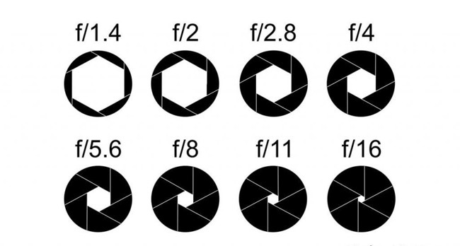
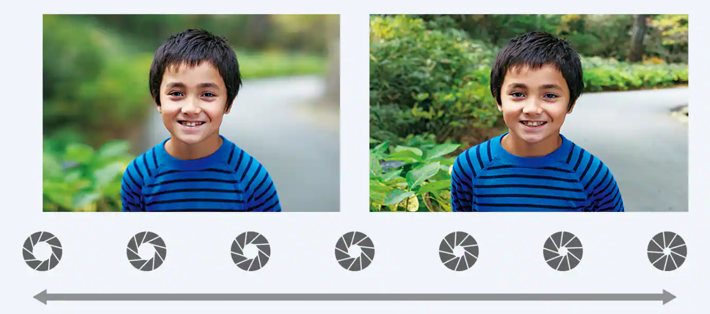

Диафрагма
Диафрагма объектива (иногда ее еще называют «апертурой») — это отверстие с переменным диаметром, которое позволяет контролировать количество света, проходящего через объектив.

При одной и той же выдержке чем больше открыта диафрагма, тем больше света попадает на поверхность матрицы.
Соответственно, чем меньше открыта диафрагма, тем меньше света попадает на поверхность матрицы.
Диафрагма и глубина резкости
С помощью термина «глубина резкости» обозначается диапазон расстояний от объектива камеры, при которых можно достичь приемлемой резкости изображения. Если рассматривать в качестве примера крайние случаи, то при малой глубине резкости в фокусе оказывается очень узкая область всего в несколько миллиметров, а при большой глубине резкости можно снимать пейзажи, на которых каждый миллиметр снимка получится рассмотреть в мельчайших деталях.
Основной принцип такой: чем больше отверстие диафрагмы, тем больше глубина резкости.
